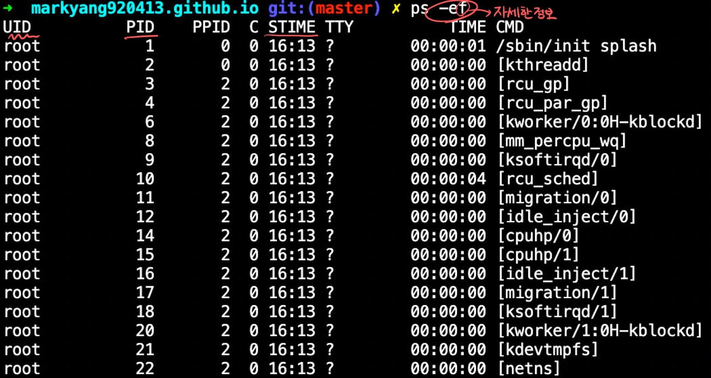
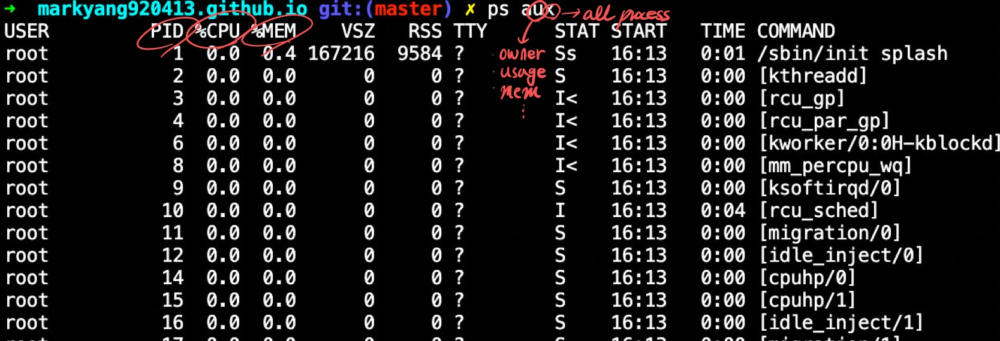
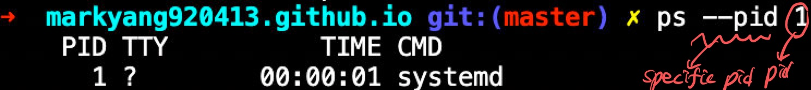
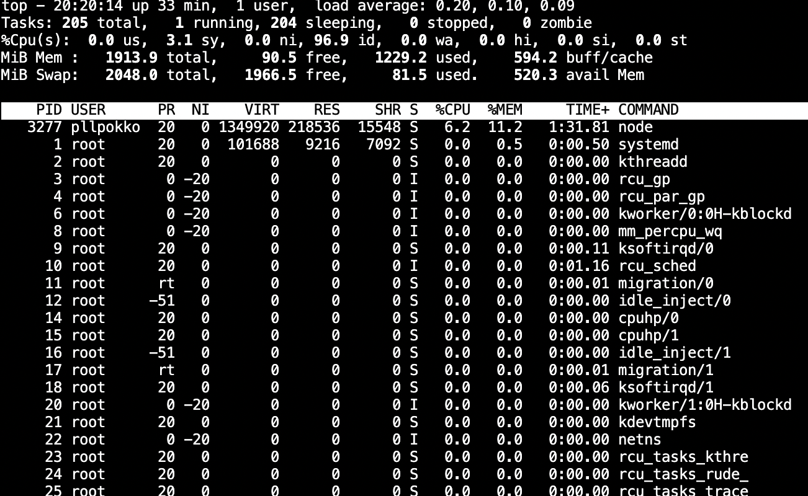

프로세스 종류, ps 명령, kill, top, jobs, 작업 전환하기(bg, fg), nohup
프로세스의 종류
- daemon 프로세스
- 특정 서비스를 제공하기 위해 존재
- 커널에 의해 실행
- 평소 대기 상태 -> 서비스 요청 -> daemon이 해당 서비스 제공
- sshd: ssh 서버 대몬, 원격 접속 서비스를 제공하기 위해 동작
- 고아(orphan) 프로세스
- 부모가 자식보다 먼저 종료되었을 때,
부모 프로세스(killed) 자식 프로세스
- 자식 프로세스는 고아 프로세스가 된다.
- 1번(UNIX, Ubuntu: init, Fedora 14: systemd) 대몬 프로세스가 이런 고아프로세스 자원을 회수한다.
- 부모가 자식보다 먼저 종료되었을 때,
- Zombie프로세스
- 자식 프로세스의 자원이 회수 되지 않고 계속 프로세스 테이블에 존재할 때
- 자식이 종료되었는 데도 남아 있을 수 있음!!!
- defunct 프로세스라고 나온다.
- kill 명령으로 제거할 수 없다.
- 해결법
- SIGCHLD -> 부모 프로세스로 보내 자식프로세스 정리
- 부모 프로세스 종료
- 자식 프로세스는 고아 프로세스가 되고 1번 프로세스가 이를 처리
- 자식 프로세스의 자원이 회수 되지 않고 계속 프로세스 테이블에 존재할 때
PID 0 번은 무슨 프로세스?
-
init 대몬 프로세스의 PID가 1인데 PPID가 0이다. 0번 프로세스는 무엇인가?
-
swapper: 프로세스 스케줄링 담당하는 스케줄러 (0번 프로세스)- CPU가 프로세스를 실행할 수 있도록 메모리에 올렸다가, 할당된 시간이 끝나면 디스크로 잠시 스왑 했다가, 다시 실행할 순서가 되면 다시 메모리에 올리는 일을 한다.
- 스와퍼만이 부팅 과정에서 별도로 실행되어 부모프로세스가 없다. 사실 OS 그자체!!?
프로세스 관리 명령
- 프로세스 목록 조회:
ps
| option | description |
| -e | 시스템에서 실행 중인 모든 프로세스의 정보를 출력한다. |
| -f | 프로세스의 자세한 정보를 출력한다. |
| -u UID | 특정 사용자에 대한 모든 프로세스의 정보를 출력한다. |
| -p PID | pid로 지정한 특정 프로세스의 정보를 출력한다. |
| a | 터미널에서 실행한 프로세스의 정보를 출력한다. |
| u | 프로세스 소유자의 이름, CPU Usage, 메모리 사용량 등 상세 정보 출력 |
| x | 시스템에서 실행 중인 모든 프로세스 정보 출력 |
| --pid PID | 지정한 특정 PID의 정보를 출력한다. |
UID: 프로세스를 실행한 사용자 ID 
| 항목 | Description |
| UID | 프로세스를 실행한 사용자ID |
| PID | 프로세스 ID |
| PPID | 이 프로세스의 부모 PID |
| C | CPU 사용량(%값) |
| STIME | 프로세스의 시작 날짜나 시간 |
| TTY | 프로세스가 실행된 터미널의 종류와 번호 |
| TIME | 프로세스 실행 시간 |
| CMD | 실행되고 있는 프로그램의 이름(명령) |

| STAT | Description |
| R | Running 실행 중 |
| S | Sleep 상태 (인터럽트가 가능한 대기) |
| s | 세션 리더 프로세스 |
| T | stopped 상태 (작업 제어에 의해 정지) |
| Z | Zombie 상태(defunct) |
| STIME | 프로세스의 시작 날짜나 시간 |
| + | 포 그라운드 프로세스 그룹 |
| l(소문자 L) | 멀티 스레드 |
| 항목 | Description |
| USER | 사용자 계정 이름 |
| %CPU | CPU 사용량을 퍼센트로 표시 |
| %MEM | 물리적 메모리 사용량을 퍼센트로 표시 |
| VSZ | 사용하고 있는 가상 메모리의 크기(KB) |
| RSS | 사용하고 있는 물리 메모리 크기(KB) |
| START | 프로세스 시작 시간 |

프로세스 종료하기
kill 명령을 이용해 프로세스 종료
$ kill [시그널 번호] [시그널 보낼 PID]
| 시그널 번호 | Description |
| -2 | 인터럽트 시그널(Ctrl + C) |
| -9 | 프로세스 강제 종료 시그널 |
| -15 | 프로세스가 관련된 파일 정리하고 프로세스 종료 시그널.종료되지 않는 프로세스가 있을 수 있다. |
pkill 이용해 프로세스 이름으로 종료
$ pkill [시그널 번호] [시그널 보낼 프로세스 이름]
top
top: 현재 실행 중인 프로세스 정보 주기적 출력
top의 출력정보
| 항목 | 의미 |
| PID | 프로세스 ID |
| USER | 사용자 계정(owner) |
| PR | 우선 순위 |
| NI | Nice 값 |
| VIRT | 프로세스가 사용하는 가상 메모리 크기 |
| RES | 프로세스가 사용하는 메모리 크기 |
| SHR | 프로세스가 사용하는 공유 메모리 크기 |
| %CPU | CPU 사용량 |
| %MEM | 메모리 사용량(%) |
| TIME+ | CPU 누적 이용 시간 |
| COMMAND | 명령 이름 |

| top의 내부 명령 | 의미 |
| enter키, space bar | 갱신 |
| h, ? | 도움말 화면 출력 |
| k | 프로세스를 종료하는데, 종료할 PID 물어봄 |
| n | 출력할 프로세스 개수를 바꾼다. |
| u | User(사용자)로 정렬하여 출력 |
| M | 사용하는 메모리의 크기에 따라 정렬하여 출력 |
| p | CPU 사용량에 따라 정렬하여 출력 |
| q | top 명령 종료 |
jobs
- 현재 실행 중인
백그라운드작업을 보여준다.
$ jobs [%작업번호]
%작업번호
%번호 : 해당 번호의 작업 정보를 출력한다.
%+ : 작업 순서가 +인 작업 정보를 출력한다.
%- : 작업 순서가 -인 작업 정보를 출력한다.
- 사용 예
| 항목 | 예 | 의미 |
| 작업 번호 | [1] | 작업 번호로서 백그라운드로 실행할 때마다 순차적으로 증가한다. [1], [2], [3]… |
| 작업 순서 | + | 작업 순서를 나타낸다. +: 가장 최근에 접근한 작업-: + 작업 보다 바로 전에 접근한 작업공백: 그 외의 작업 |
| 상태 | 실행중 | 작업 상태 Running: 현재 실행 중 Done: 완료 됨, 작업이 정상적으로 종료된다. Terminated: 종료 됨, 작업이 비정상적으로 종료된다. Stopped: 작업이 잠시 중단된다. |
작업 전환하기
| 작업 전환 명령 | 의미 |
| Ctrl + z or stop [%작업번호] | 포 그라운드 작업을 중지(종료가 아니라 잠시 중단!!) |
| bg [%작업번호] | 작업 번호가 지시하는 작업을 백 그라운드로 전환 |
| fg [%작업번호] | 작업 번호가 지시하는 작업을 포 그라운드로 전환 |
nohup: 로그아웃 후에도 백그라운드 작업 계속 실행
- 로그아웃한 다음에도 작업이 완료될 때까지 백그라운드 작업 실행한다.
$ nohup 명령&
- nohup로 실행한 명령은
반드시 백그라운드로실행해야 한다.